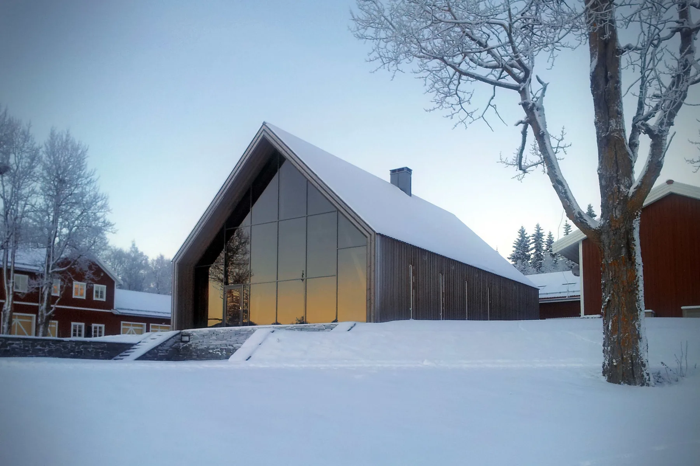
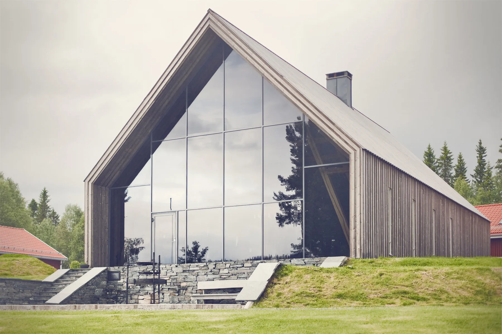
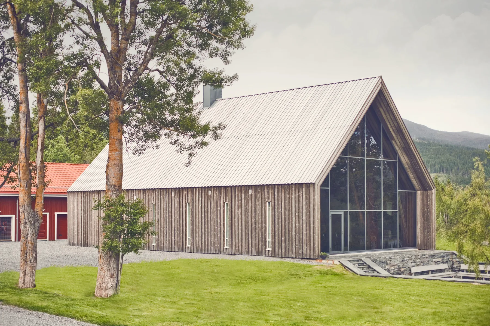
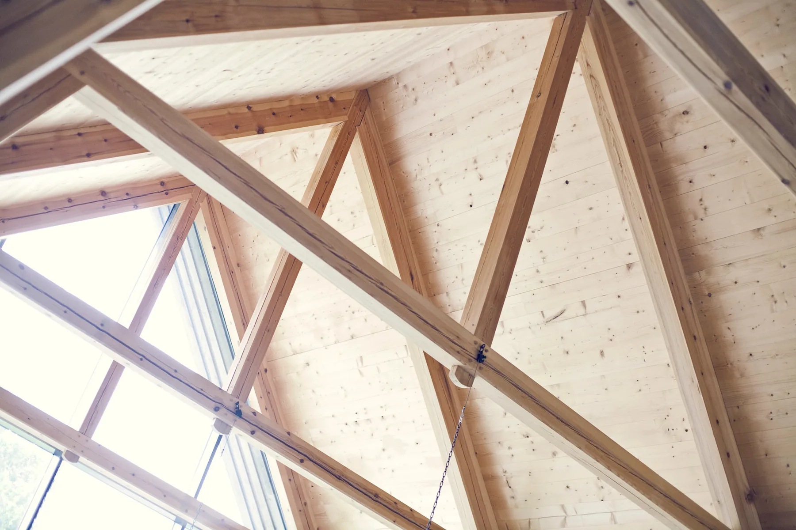
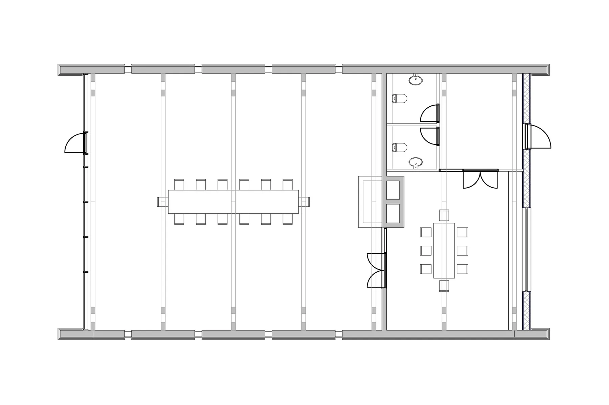
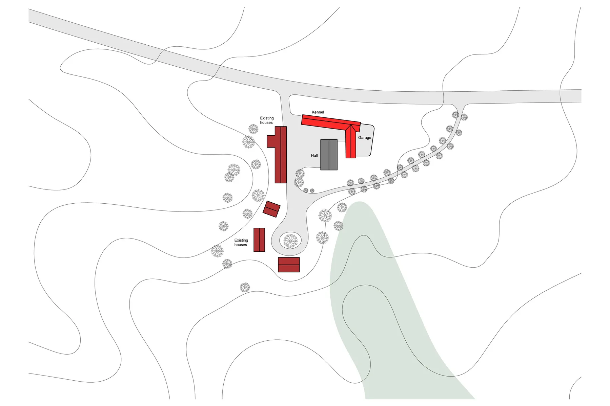
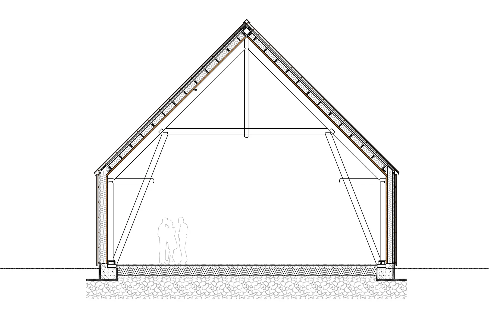

Gildehall Duved
48Gildehall og garasjeanlegg
NybyggSe bildegalleri

- Byggherre
- Privat
- Byggeår
- 2012
- Medarbeidere
- Kjetil Nordø
Om prosjektet
Et landsted i Duved har fått en gildehall og et garasjeanlegg som rammer inn tunet. Trekonstruksjoner, kjerneved, naturstein og skifer gir bygningene et tydelig materialpreg.
Bilder & tegninger7 bilder



Forstørr

Forstørr

Forstørr

Forstørr

Forstørr

ForstørrLa oss begynne med en samtale